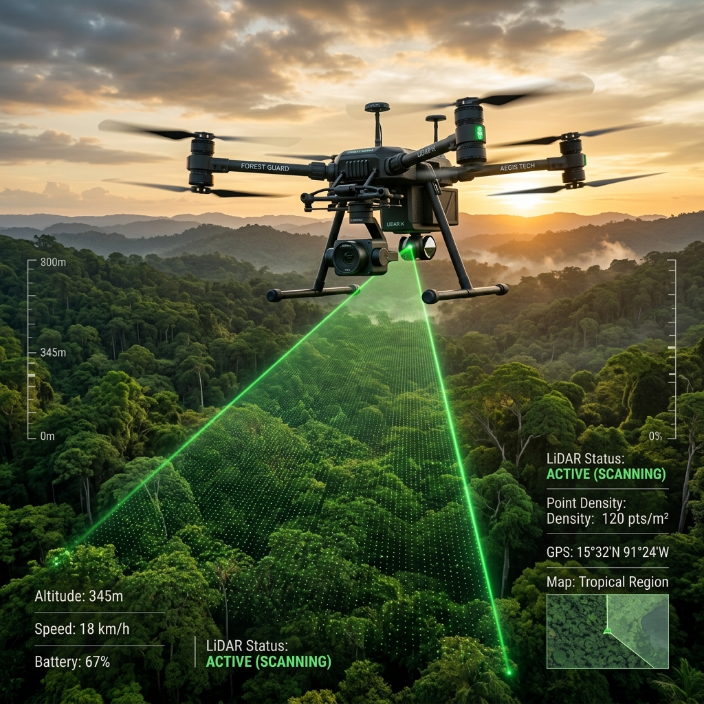
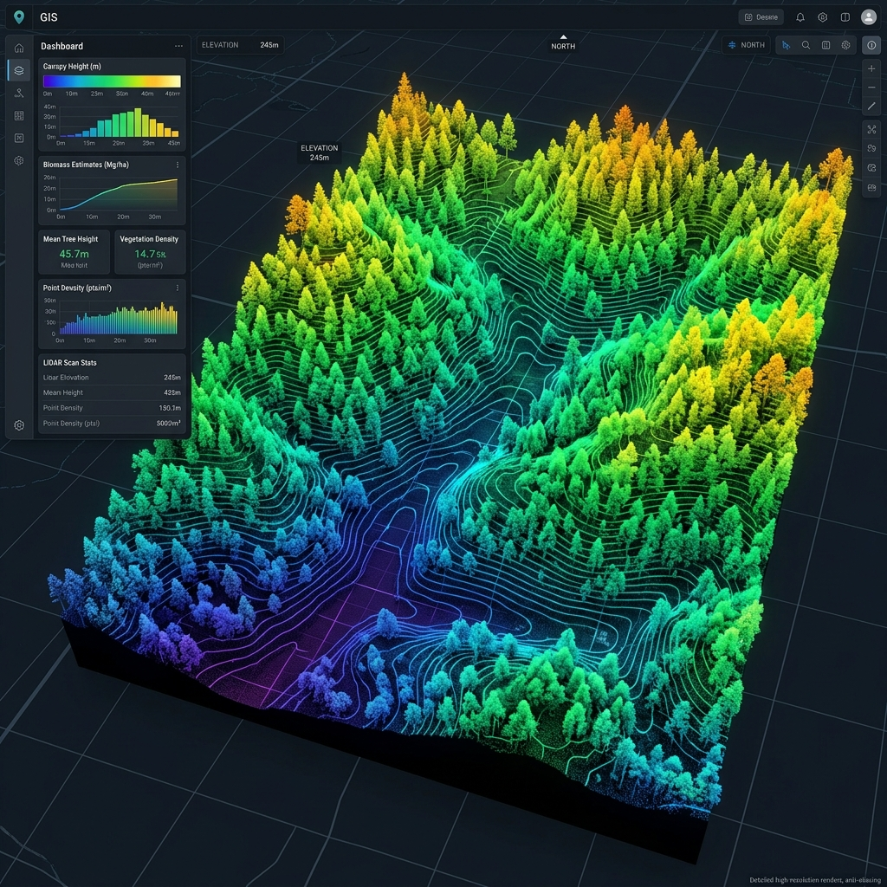
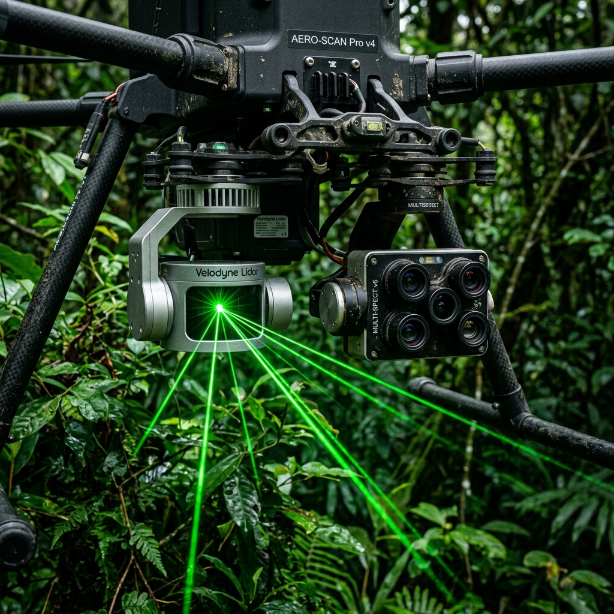
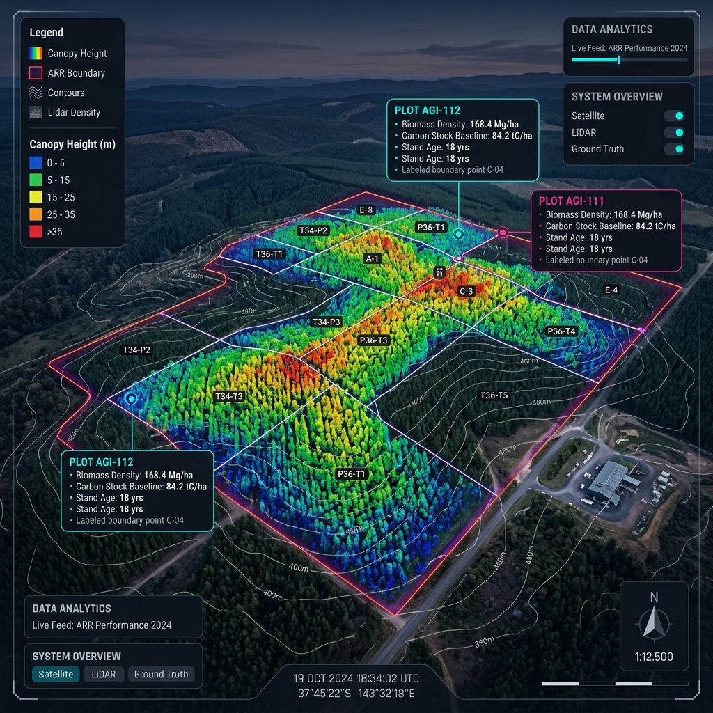
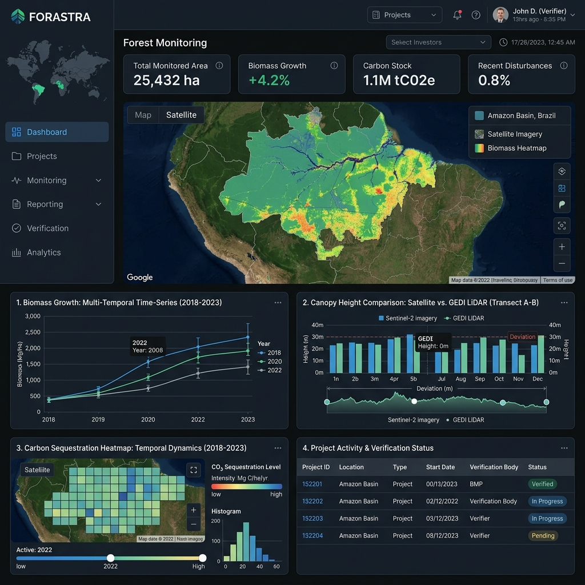
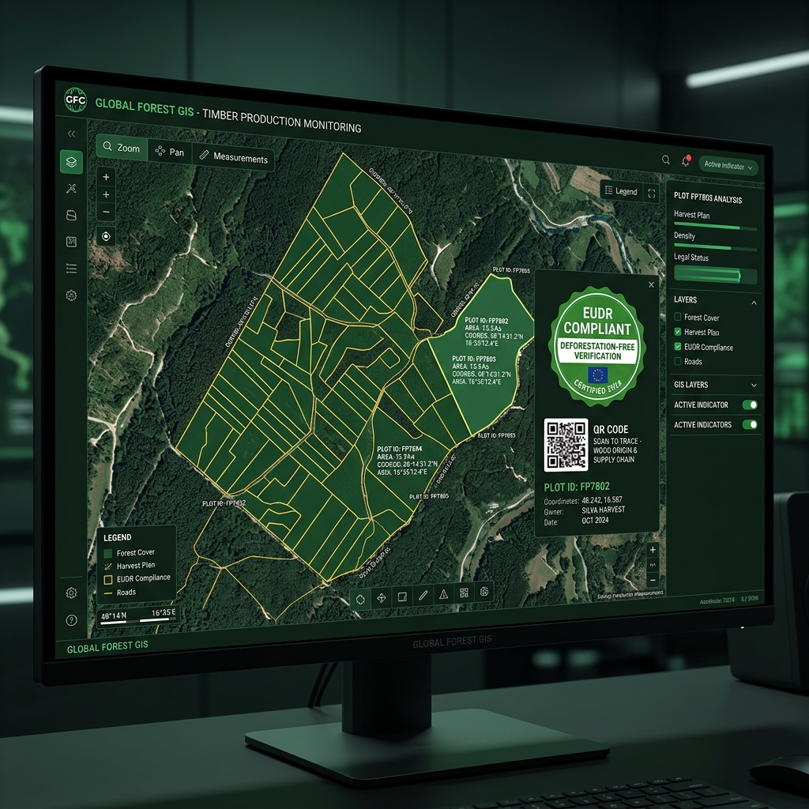
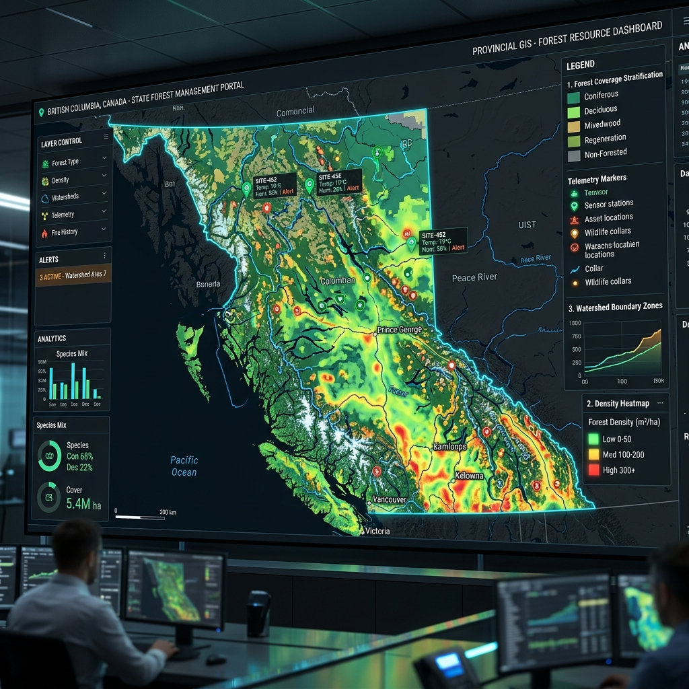
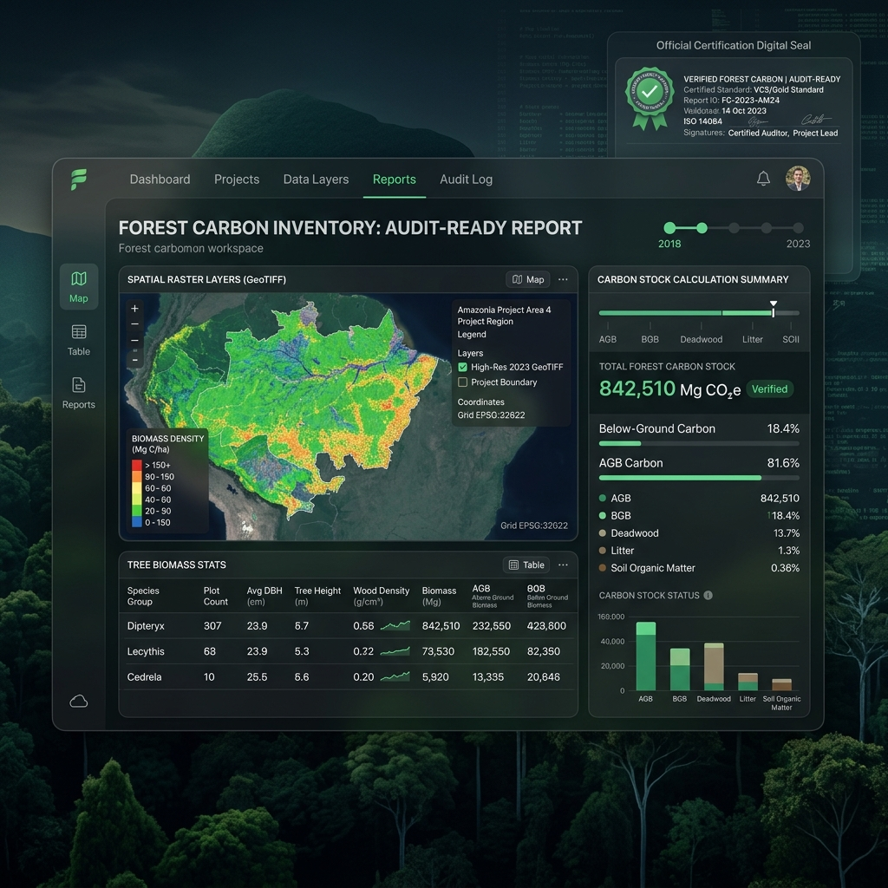

Khảo sát UAV tích hợp LiDAR và cảm biến đa phổ, kết hợp ô mẫu đo đạc mặt đất, cho bản đồ và hồ sơ MRV carbon rừng chuẩn quốc tế (VM0047/IPCC) — phục vụ chủ rừng, doanh nghiệp lâm nghiệp và cơ quan quản lý trong dự án tín chỉ carbon, quản lý rừng bền vững và truy xuất nguồn gốc (EUDR).

Những rào cản lớn nhất trong kiểm kê carbon rừng và tuân thủ chuỗi cung ứng xuất khẩu hiện nay.
Điều tra thủ công tốn nhân lực, ô mẫu thưa, địa hình hiểm trở. Ảnh quang học và SAR bị bão hòa ở thảm thực vật rừng dày kín tán.
Chưa có bộ số liệu nền chuẩn hóa theo phương pháp luận tín chỉ quốc tế (VM0047 CCP-approved) để làm căn cứ đăng ký dự án ARR/REDD+.
Ranh giới lô rừng chưa rõ ràng. Tín chỉ carbon chỉ tính cho phần hấp thụ tăng thêm; dữ liệu thiếu minh bạch dễ bị loại khỏi thẩm định.
EUDR yêu cầu tọa độ địa lý từng thửa đất và chứng minh không gây phá rừng sau 31/12/2020. Khai báo lâm sản theo Thông tư 26/2025/TT-BNNMT.
Phương pháp luận tín chỉ bắt buộc đo lặp ô mẫu tối thiểu 5 năm/lần (VM0047, CDM). Đo thủ công toàn bộ diện tích mỗi kỳ là điều gần như không thể về chi phí và thời gian.
GASCOLAE tích hợp quy trình khảo sát UAV-LiDAR xuyên tán, cảm biến đa phổ, đo đạc ô mẫu mặt đất (Ground Truth) và định vị GNSS RTK để tạo dựng bản đồ carbon rải đều và hồ sơ MRV có thể kiểm toán.
UAV-LiDAR bay phủ theo tuyến trên diện rộng, giúp thu thập dữ liệu độ cao tán rừng liên tục ở cả những địa hình dốc đứng hiểm trở mà điều tra thủ công không thể tiếp cận.
Xung laser LiDAR phát xuyên qua các khoảng trống tán lá để đo trực tiếp độ cao thảm thực vật và điểm mặt đất (CHM), khắc phục hoàn toàn hiện tượng bão hòa tín hiệu của ảnh vệ tinh quang học/SAR.
Dữ liệu được xử lý theo phương pháp luận VM0047 (ARR - ICVCM CCP approved), CDM AR-AMS0007, ART TREES và IPCC AFOLU. Khai báo độ không đảm bảo (90% CI) minh bạch.
Số hóa ranh giới lô rừng, trích xuất tọa độ địa lý thửa đất sản xuất (gỗ, cà phê, cao su) phục vụ Tuyên bố thẩm định EUDR (DDS) và Thông tư 26/2025/TT-BNNMT.

Sự kết hợp giữa công nghệ cảm biến tiên tiến, viễn thám và đo đạc thực địa.

Hệ thống cảm biến kép cho phép đo đồng thời 240.000 điểm laser/giây xuyên qua thảm thực vật dày và ghi nhận phản xạ đa phổ RedEdge/NIR, phục vụ tính toán sinh khối và đánh giá sức khỏe lâm phần.
Bay phủ tuyến, thu thập điểm laser đa hồi âm (Single/Multiple return) tới 240,000 pts/s. Độ chính xác hệ thống ngang 5cm, đứng 4cm ở 150m.
Băng phổ Blue, Green, Red, Red Edge, NIR + Pan-sharpened 2cm/px. Tính chỉ số NDVI/NDRE đánh giá sức khỏe và phân loại thảm thực vật.
Đo điểm khống chế mặt đất (GCP) với độ chính xác milimet. Định vị không gian và đồng bộ tọa độ chính xác giữa các kỳ đo lặp.
Thiết kế ô mẫu lồng (Nested plots). Đo DBH (đường kính ngực) và chiều cao cây bằng Hypsometer Vertex 5 & thước dây chuyên dụng.
Tự động phân loại điểm mặt đất/thực vật, tách cây cá thể, trích xuất độ cao tán (CHM) và tính toán metrics lâm phần.
Ước tính sinh khối trên mặt đất (AGB) qua phương trình Allometric địa phương. Quy đổi Carbon với Carbon Fraction (CF = 0.47 tC/t dry matter).
Đáp ứng đa dạng nhu cầu của Chủ rừng, Doanh nghiệp và Cơ quan Quản lý Nhà nước.
Chủ rừng hoặc chủ dự án trồng mới/tái trồng rừng (ARR) hoặc rừng hiện hữu (REDD+/IFM) cần số liệu nền tin cậy trước khi đăng ký dự án tín chỉ.

Theo dõi lượng hấp thụ tăng thêm qua các kỳ thẩm định theo tần suất phương pháp luận (đo ô mẫu tối thiểu 5 năm/lần theo VM0047/CDM).

Doanh nghiệp xuất khẩu gỗ, cà phê, cao su cần chứng minh tọa độ thửa đất và không gây phá rừng sau hạn mốc 31/12/2020.

Cung cấp số liệu cập nhật diện tích/trữ lượng rừng giữa các chu kỳ kiểm kê 5 năm cho Chi cục Kiểm lâm, Sở NN&PTNT, Quỹ VNFF.

Lựa chọn gói giải pháp phù hợp với giai đoạn và mục tiêu của dự án.
Kiểm kê & Lập bản đồ Carbon nền (dùng 1 lần)
MRV Định kỳ & Giám sát Biến động (Gói theo năm/kỳ)
Hồ sơ Tín chỉ Carbon Rừng & Tuân thủ EUDR
💡 Lưu ý: GASCOLAE là đơn vị đo đạc và tư vấn độc lập; việc phát hành tín chỉ carbon do tổ chức thẩm định độc lập (VVB) và cơ quan có thẩm quyền thực hiện.
Hồ sơ số hóa hoàn chỉnh, đáp ứng tiêu chí nghiệm thu của Verifier và Cơ quan quản lý.
Tất cả sản phẩm GIS (GeoTIFF, Shapefile, KML) và báo cáo kiểm kê carbon đều được đóng gói theo đúng quy chuẩn phương pháp luận VM0047 và tiêu chuẩn kiểm kê khí nhà kính IPCC, sẵn sàng cung cấp cho Verifier VVB và đối tác đăng ký tín chỉ.

Dạng Raster GeoTIFF / Shapefile / KML + Bản đồ in PDF. Thể hiện mật độ t/ha và tCO₂e/ha toàn khu vực.
Báo cáo PDF/DOCX mô tả phương pháp, thiết kế ô mẫu, kết quả phân tầng và sai số không đảm bảo.
Phân tích thay đổi trữ lượng carbon giữa các kỳ đo lặp + Bảng dữ liệu Excel chi tiết (Level 2+).
Kho dữ liệu chứa file LiDAR thô, nhật ký chuyến bay, phiếu ô mẫu thực địa và biên bản hiệu chuẩn thiết bị.
Bộ số liệu theo chuẩn phương pháp luận (VM0047 area-based: chỉ số thảm thực vật, ô mẫu, khấu trừ UNC).
Bản đồ ranh giới lô + Tọa độ thửa đất dạng GIS + Bảng thuộc tính phục vụ khai báo lâm sản và EUDR DDS.
Phiên làm việc trực tiếp với Chủ rừng/Doanh nghiệp để giải trình kết quả, hướng dẫn khai thác bản đồ GIS và tư vấn chu kỳ đo lặp tiếp theo.
Trình tự làm việc minh bạch từ xin phép bay đến bàn giao hồ sơ.
Xác định ranh giới lô, phương pháp luận mục tiêu (VM0047). Đăng ký và xin cấp phép bay UAV theo Nghị định 288/2025/NĐ-CP.
Đo mốc khống chế GNSS RTK (GCP). Bay UAV-LiDAR theo tuyến chỉ định và kiểm tra QC sơ bộ mật độ điểm tại hiện trường.
Lập ô mẫu lồng (Nested plots). Đo đường kính ngực (DBH) và chiều cao cây làm Ground Truth đối chuẩn dữ liệu bay.
Phân loại điểm mặt đất/thực vật, tạo mô hình CHM. Tính sinh khối (AGB) và carbon qua phương trình Allometric & IPCC CF 0.47.
Kiểm tra QA nội bộ, xuất bản đồ GIS, hoàn thiện báo cáo MRV / hồ sơ tín chỉ Audit-ready và chuyển giao tới khách hàng.
Giải đáp thắc mắc phổ biến về công nghệ, pháp lý và phương pháp đo đạc.
LiDAR phát xung laser xuyên qua các khoảng trống tán lá để ghi nhận điểm độ cao tán và điểm mặt đất, tạo nên Mô hình chiều cao tán (CHM). Kết hợp với số liệu đo đạc thực địa tại các ô mẫu (DBH, chiều cao) và phương trình Allometric để tính toán trữ lượng sinh khối (AGB) và quy đổi sang Carbon.
Không. Ô mẫu mặt đất là bắt buộc (Ground Truth) để hiệu chuẩn mô hình LiDAR và là yêu cầu bắt buộc của các phương pháp luận tín chỉ quốc tế như Verra VM0047 hay CDM.
Theo quy định của phương pháp luận tín chỉ (VM0047, CDM), ô mẫu mặt đất cần đo lặp tối thiểu 5 năm/lần. GASCOLAE khuyến nghị chu kỳ bay đo lặp từ 2–5 năm tùy theo tốc độ tăng trưởng của loại rừng.
Có. Mọi hoạt động bay khảo sát UAV tại Việt Nam phải tuân thủ Nghị định 288/2025/NĐ-CP: đăng ký phương tiện bay, Giấy chứng nhận đủ điều kiện kỹ thuật và được Cục tác chiến - Bộ Quốc phòng cấp phép bay từng hoạt động.
Có. Bản đồ ranh giới lô, tọa độ địa lý thửa đất sản xuất và hiện trạng thảm phủ rừng do GASCOLAE cung cấp đáp ứng đầy đủ yêu cầu cho Tuyên bố thẩm định EUDR (DDS) và Thông tư 26/2025/TT-BNNMT.
Hệ số Carbon Fraction (CF) mặc định cho gỗ theo hướng dẫn IPCC Table 4.3 là 0.47 tC/t chất khô. GASCOLAE ưu tiên sử dụng các phương trình allometric địa phương đối với từng loài cây (keo, bạch đàn, thông, cao su, tràm...).
Giá tham khảo thị trường (không phải giá dịch vụ đo đạc): Thương vụ ERPA Bắc Trung Bộ ký mốc 5 USD/tCO₂; thương vụ LEAF/Emergent tối thiểu 10 USD/tCO₂; tín chỉ loại bỏ carbon (removal) trên thị trường tự nguyện đạt trung bình ~15.91 USD/tín chỉ (2023).
Khu vực nhúng AI Agent dành riêng cho Trợ lý Carbon rừng GASCOLAE S0300.
Điền thông tin để nhận tư vấn giải pháp đo đạc phù hợp nhất với diện tích rừng của bạn.
Toàn quốc (Ưu tiên các vùng rừng trọng điểm Bắc Trung Bộ, Nam Trung Bộ, Tây Nguyên và Đồng bằng Sông Cửu Long)
Toàn bộ ranh giới lô rừng, tọa độ địa lý và số liệu carbon của khách hàng được bảo mật theo thỏa thuận NDA.